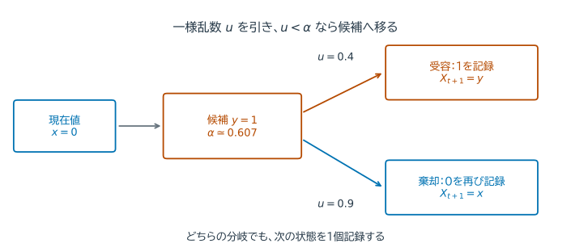
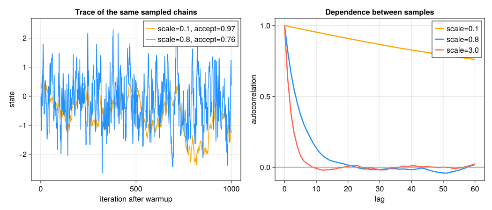
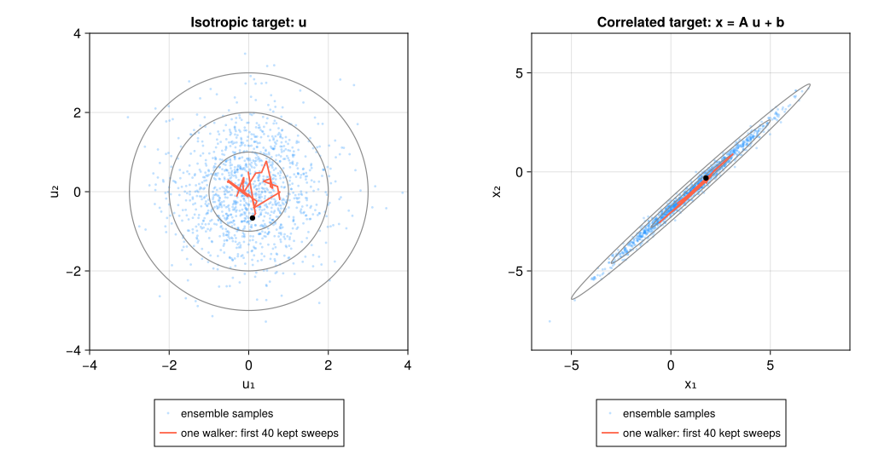

15. マルコフ連鎖モンテカルロ法#
マルコフ連鎖モンテカルロ法（Markov chain Monte Carlo; MCMC）は、直接サンプリングしにくい確率分布から、依存性を持つ標本列を生成する方法である。目的は最大値を一つ求めることではなく、期待値、分散、信用区間など、分布全体に関する量を評価することにある。
15.1. この章の目標#
正規化されていない目標密度からMCMCを構成できる理由を説明できる。
候補を作り、受容または棄却する1ステップを説明できる。
提案分布の尺度が受容率と自己相関に与える影響を説明できる。
warmup、自己相関、有効標本数、複数chainによる診断の役割を説明できる。
複数の初期値と標本平均の精度から、計算結果を点検できる。
Affine invariant MCMCのstretch moveと、複数walkerを使う利点を説明できる。
ensembleの並列更新と診断を、独立なchainの場合と区別できる。
15.2. 分布に関する平均を、標本で近似する#
第8章では積分を格子点の値の和で近似した。確率分布に関する期待値も
という積分である。例えば \(f(x)=x\) なら平均、\(f(x)=x^2\) なら二乗の平均、区間内で1・外で0の関数ならその区間の確率になる。次元が大きい場合、各軸に格子を作ると点数が急増する。分布に従う標本を作って \(N^{-1}\sum_{t=1}^N f(X_t)\) で近似するのがMonte Carlo法の考え方である。
単純な正規分布なら randn で独立な標本を直接作れる。一方、密度の形を計算できても直接標本を作る方法が分からない場合がある。そこで現在の位置から次の候補へ移る反復を使う。
15.2.1. 正規化定数が分からなくてもよい#
目標密度が \(\pi(x)=w(x)/Z\) と書け、正規化定数 \(Z=\int w(x)dx\) は難しくても \(w(x)\) は評価できるとする。比なら \(\pi(y)/\pi(x)=w(y)/w(x)\) となり、\(Z\) は消える。ベイズ推論の事後密度 \(p(\theta\mid D)\propto p(D\mid\theta)p(\theta)\) はその代表例である。
次の状態の分布が現在の状態だけで決まる確率的な列をマルコフ連鎖という。現在の状態が \(\pi\) に従うとき、1回更新した後も \(\pi\) に従うなら、\(\pi\) はその更新の不変分布である。MCMCでは、この性質を持ち、必要な領域を探索できる更新を作る。
不変分布があるだけでは任意の初期値から十分探索できるとは限らない。適切な既約性・再帰性などの条件のもとで標本平均が期待値へ近づく。以下では、既知の標準正規分布を使って仕組みを確かめる。標本は一般に独立でないため、個数をそのまま独立標本数とは数えない。
15.3. Metropolis--Hastings法#
現在値 \(x\) から提案分布 \(q(y\mid x)\) に従って候補 \(y\) を生成し、確率
で移動する。棄却した場合は \(X_{t+1}=X_t\) とし、同じ値をchainへ記録する。この受容確率では、異なる2点間の確率の流れは
となり、\(x\) と \(y\) を交換しても変わらない。この詳細釣り合いが、目標密度を不変に保つ理由である。棄却した状態を記録しないと、その位置に留まった時間を落としてしまい、一般に目標分布とは異なる列になる。
数値計算ではunderflowを避けるため対数を使う。対称なrandom-walk提案
では \(q(y\mid x)=q(x\mid y)\) なので、対数受容率は
となる。例えば \(w(x)=e^{-x^2/2}\) で現在値0、候補1なら、受容確率は \(e^{-1/2}\approx0.607\) である。一様乱数が0.4なら移動し、0.9なら現在値0をもう一度記録する。密度が低い方へも確率的に移るので、最頻値を一つ探す最適化とは異なる。


図 15.1 分岐の両側で、必ず一つの状態を記録する。例えば次の反復も棄却なら、列は \(0,0,0,\ldots\) と同じ値が続く。この繰り返しも滞在時間を表す標本の一部である。#
using LinearAlgebra, Random, Statistics
function rwmh(logtarget, x0, nsteps; proposal_scale=1.0, rng=Random.default_rng())
nsteps > 0 || error("nstepsは正にしてください")
proposal_scale > 0 || error("proposal_scaleは正にしてください")
x = collect(float.(x0))
logp = logtarget(x)
isfinite(logp) || error("初期値で対数密度が有限ではありません")
chain = Matrix{Float64}(undef, length(x), nsteps)
accepted = 0
for t in 1:nsteps
y = x + proposal_scale*randn(rng, length(x))
logpy = logtarget(y)
isnan(logpy) && error("対数密度がNaNです")
logalpha = min(0.0, logpy-logp)
if log(rand(rng)) < logalpha
x, logp = y, logpy
accepted += 1
end
chain[:,t] = x
end
return chain, accepted/nsteps
end
logtarget(x) = -x[1]^2/2 # 標準正規分布。正規化定数は省略できる。
results = Dict{Float64,Tuple{Matrix{Float64},Float64}}()
for scale in (0.1, 0.8, 3.0)
chain, acceptance = rwmh(logtarget, [0.0], 20_000;
proposal_scale=scale, rng=MersenneTwister(2026))
results[scale] = (chain, acceptance)
kept = chain[1,2001:end]
println("提案尺度=$scale: 受容率=",round(acceptance,digits=3),
", 平均=",round(mean(kept),digits=3),", 二乗の平均=",round(mean(abs2,kept),digits=3))
end
提案尺度=0.1: 受容率=0.969, 平均=0.007, 二乗の平均=0.985
提案尺度=0.8: 受容率=0.765, 平均=-0.002, 二乗の平均=0.955
提案尺度=3.0: 受容率=0.378, 平均=-0.007, 二乗の平均=0.985
15.4. 提案尺度、自己相関、有効標本数#
出力の平均は0、二乗の平均は1が比較の基準である。最初の2000点を除いているが、この長さに普遍的な保証はない。反復番号に対して状態を描いたトレースと、離れた時点同士の似方を測る自己相関も見る。
random-walkの尺度 \(s\) が小さすぎると受容率は高くても移動距離が短く、chainは強く自己相関する。大きすぎると候補が低密度領域へ出やすく、棄却が増える。したがって、受容率だけで効率や収束を判断できない。
平均と分散が時間によらない状態で、\(k\) ステップ離れた値同士の相関をlag-\(k\) 自己相関という。和が収束して中心極限定理を使える場合、その自己相関を \(\rho_k\) とすると、標本平均の分散は概略
となる。括弧内を積分自己相関時間 \(\tau\) と呼び、
を有効標本数とみなす。有限標本から無限和を推定するには慎重な打切りが必要であり、ここで用いる打切り則は、正の自己相関が続く間だけ和を取る簡易法である。負の相関で効率が改善する場合を扱わず、実用的な診断の代用品ではない。ESSは推定する量 \(f(X)\) ごとに異なる。
例えば標本が10000個でも \(\tau=20\) なら、平均に関するESSは約500となる。独立標本の場合より誤差が大きく、平均のMonte Carlo標準誤差は概ね \(\sqrt{\widehat{\operatorname{Var}}(X)/N_{\mathrm{eff}}}\) と見積もる。これは目標分布自体のばらつきと、平均を計算した際の不確かさを区別する量である。
function autocorrelations(x, maxlag)
z = x .- mean(x)
denominator = dot(z,z)
denominator > 0 || error("定数列の自己相関は計算できません")
n = length(z)
0 ≤ maxlag < n || error("lagの範囲を確認してください")
return [dot(view(z,1:n-lag),view(z,1+lag:n))/denominator for lag in 0:maxlag]
end
function simple_ess(x; maxlag=min(1000,length(x)-1))
ρ = autocorrelations(x,maxlag)
τ = 1.0
for lag in 1:maxlag
ρ[lag+1] > 0 || break
τ += 2ρ[lag+1]
end
return min(length(x),length(x)/τ),ρ
end
for scale in (0.1, 0.8, 3.0)
chain, acceptance = results[scale]
x1 = chain[1,2001:end]
ess,ρ = simple_ess(x1)
println("scale=$scale: 受容率=$(round(acceptance,digits=3)), lag-1相関=$(round(ρ[2],digits=3)), 簡易ESS=$(round(ess,digits=1))")
end
scale=0.1: 受容率=0.969, lag-1相関=0.995, 簡易ESS=32.4
scale=0.8: 受容率=0.765, lag-1相関=0.818, 簡易ESS=1821.7
scale=3.0: 受容率=0.378, lag-1相関=0.623, 簡易ESS=4358.4
Show code cell source
# 掲載図の再作成用
using CairoMakie
CairoMakie.activate!(type="svg")
figure_dir = isdir("pic") ? "pic" : joinpath("..", "pic")
let
fig = Figure(size=(1050,450),fontsize=16)
ax = Axis(fig[1,1];xlabel="iteration after warmup",ylabel="state",title="Trace of the same sampled chains")
for (scale,color) in zip((0.1,0.8),(:orange,:dodgerblue))
chain, acceptance = results[scale]
lines!(ax,1:1000,chain[1,2001:3000];color,linewidth=1.5,
label="scale=$scale, accept=$(round(acceptance,digits=2))")
end
axislegend(ax;position=:rt)
ax2 = Axis(fig[1,2];xlabel="lag",ylabel="autocorrelation",title="Dependence between samples")
for (scale,color) in zip((0.1,0.8,3.0),(:orange,:dodgerblue,:tomato))
correlation = autocorrelations(results[scale][1][1,2001:end],60)
lines!(ax2,0:60,correlation;color,linewidth=2.5,label="scale=$scale")
end
hlines!(ax2,[0.0];color=:gray60)
axislegend(ax2;position=:rt)
save(joinpath(figure_dir,"mcmc_proposal_autocorrelation.svg"),fig)
end


図 15.2 本文の標準正規分布に対する同じ標本列を表示している。小さすぎる提案は高い受容率を持っても少しずつしか動かず、自己相関が長く残る。大きすぎる提案も棄却による停滞を増やすため、受容率だけでなくtraceと自己相関を併せて調べる。#
初期値の影響を調べたり提案を調整したりする準備区間をウォームアップと呼ぶ。本文の最初の2000点も準備区間として除いた。提案分布の調整はウォームアップ中に行い、その後は固定して標本を集めるのが基本である。標本収集中も無制限に適応を続けると、不変分布を保つための条件を損なう場合がある。実用ライブラリでは、理論的条件を満たす適応法が実装されている。
15.5. 山が二つある分布と初期値依存性#
離れたmodeを持つ分布では、各mode内でよく動いていてもmode間を移動できないことがある。次の1次元混合分布は \(-5\) と \(5\) の近くに山（モード）を持ち、各成分の標準偏差は0.8である。
function logaddexp(a,b)
m = max(a,b)
m == -Inf && return -Inf
return m + log(exp(a-m)+exp(b-m))
end
function log_bimodal(x)
component_scale = 0.8
a = log(0.5)-log(component_scale)-0.5*((x[1]+5)/component_scale)^2
b = log(0.5)-log(component_scale)-0.5*((x[1]-5)/component_scale)^2
return logaddexp(a,b)
end
left_chain,left_acceptance = rwmh(log_bimodal,[-5.0],30_000;
proposal_scale=0.8,
rng=MersenneTwister(10))
right_chain,right_acceptance = rwmh(log_bimodal,[5.0],30_000;
proposal_scale=0.8,
rng=MersenneTwister(20))
left_kept = left_chain[1,5001:end]
right_kept = right_chain[1,5001:end]
println("左mode開始: 平均=$(mean(left_kept)), x>0の割合=$(mean(left_kept.>0)), 受容率=$left_acceptance")
println("右mode開始: 平均=$(mean(right_kept)), x>0の割合=$(mean(right_kept.>0)), 受容率=$right_acceptance")
左mode開始: 平均=-4.984943053051939, x>0の割合=0.0, 受容率=0.7062333333333334
右mode開始: 平均=4.995548682036515, x>0の割合=1.0, 受容率=0.7010333333333333
15.6. 結果の読み方：一つの診断だけで決めない#
二つの山の例では、全体の平均は対称性から0である。しかし、一つの山に留まる列の平均は約 \(-5\) または5となる。受容率が高くても、分布全体を十分に見ていない。
異なる初期値から複数の列を動かし、トレース、推定平均、自己相関を比べる。実用的には、列内と列間のばらつきを比べる \(\widehat R\)、推定する量ごとのESS、Monte Carlo標準誤差を併用する。\(\widehat R\) が1に近いことも、すべての領域を探索したという証明ではない。最初の一定個数を捨てるだけでも収束は保証されない。
標本数を増やすと、適切に混合している場合の標準誤差は概ね \(1/\sqrt{N_{\mathrm{eff}}}\) で減る。半分の誤差にしたければ、約4倍の有効標本が必要である。これは第8章の格子細分化による誤差とは異なる減り方である。
15.7. Affine invariant MCMC：複数walkerで分布の形を捉える#
15.7.1. 勾配を使わず、ほかのwalkerを提案に利用する#
パラメータごとの尺度が大きく異なったり、強い相関があったりすると、等方的なrandom-walk提案は調整が難しくなる。細長い分布の短い方向に歩幅を合わせると長い方向の探索が遅くなり、長い方向に合わせると分布の外へ出て棄却されやすい。
Affine invariant ensemble MCMCは、複数の探索点（walker）を持ち、その相対位置を使って次の候補を作る方法である。walkerの集まりをensembleという。分布に沿ってwalkerが広がっていれば、その位置の差を使った提案も分布の向きと尺度を反映する。共分散行列や勾配を明示的に計算せずに、こうした形の違いへ対応できる。
特に、尤度を評価するたびにシミュレーションを実行する問題など、密度は評価できるが勾配を用意するのが難しい場合に使いやすい。後述する分割更新では複数の候補の密度評価を同時に行えるため、評価が重い問題で並列計算を活用しやすいことも利点である。
以下では、Goodman–Weareの stretch move を扱う。Pythonの emcee でも代表的な更新法として使われている。方法の原典は Goodman and Weare (2010)、並列化を含む実装は Foreman-Mackey et al. (2013) を参照されたい。
15.7.2. Stretch move：2点を結ぶ方向に伸び縮みする#
\(d\) 次元の探索点を \(X_1,\ldots,X_K\) とする。現在のwalker \(X_i\) を動かすために、別のwalker \(X_j\) を選び、
を候補にする。\(z=1\) なら現在位置、\(z<1\) なら相手へ近づき、\(z>1\) なら相手から遠ざかる方向へ動く。例えば \(X_j=(0,0)\)、\(X_i=(2,1)\)、\(z=1.5\) なら \(Y=(3,1.5)\) である。一度の提案はこの直線上だが、相手を選び直すことで異なる方向へ動ける。
伸縮率は
から引く。この分布は \(g(1/z)=zg(z)\) を満たす。実装では \(u\sim U(0,1)\) として \(z=\{1+(a-1)u\}^2/a\) とすればよい。\(a=2\) はよく用いられる設定である。
受容確率は、単なる密度比ではなく
となる。\(z^{d-1}\) は、相手の点から見た距離を伸縮するときの体積要素を補正する因子である。この因子を落とすと、\(d>1\) では一般に正しい分布を保てない。数値計算では
を使い、棄却した場合も元の位置を記録する。
15.7.3. 「Affine invariant」の意味#
可逆な行列 \(A\) とベクトル \(b\) を使って \(\widetilde X=AX+b\) と座標を変えると、平行移動、回転、伸縮、せん断を表せる。この変換に対し
が成り立つので、提案の作り方は変わらない。また変換後の密度に入る定数 \(1/|\det A|\) は受容確率の比で消える。初期ensembleも対応させて同じ乱数を使えば、理想的な厳密演算では標本列全体が同じアフィン変換で対応する。これがアフィン不変性である。
このため、線形な相関や単位の違いに合わせて座標ごとの提案尺度を調整する負担が小さい。ただし、非線形に曲がった谷、離れたモード、高次元化そのものが解消される性質ではない。
15.7.4. 二つの群に分けると並列化できる#
ensemble全体の不変密度を
とする。相手の位置を固定したstretch moveが正しい条件付き分布を保つように更新すれば、ensemble全体でもこの密度を保てる。
並列実装では、walkerを二つの群 \(\mathcal A,\mathcal B\) に分ける。
\(\mathcal B\) を固定する。\(\mathcal A\) の各walkerは、\(\mathcal B\) から相手を選び、候補を作って受容・棄却を判定する。この群内の密度評価は並列に行える。
更新後の \(\mathcal A\) を固定し、\(\mathcal B\) を同様に更新する。
両群の更新が終わった状態を、1回の sweep として記録する。
すべてのwalkerを、互いを動かしながら一斉更新してよいわけではない。固定した相手の群を使うことと、二つの段階の間で全更新の完了を待つことが必要である。この分割方式は emcee の red–blue update にも使われている。
等分した場合、各段階では約 \(K/2\) 個の密度評価を同時に進められる。1 sweepには合計 \(K\) 回の候補評価が必要なので、単一chainの1ステップとは費用が異なる。並列化による利得は、密度評価が重いほど得やすい。安価な密度では通信やタスク起動の費用が上回ることもある（emceeの並列化解説）。
15.7.5. Juliaで実装する#
以下は2群に分けるstretch moveの実装である。initial は「次元 × walker数」の行列、戻り値の標本は「次元 × walker数 × sweep数」の配列とする。この実装では偶数個かつ \(K\geq2d\) を要求し、初期点が低次元の平面に潰れていないことも確認する。すべてを同じ位置に置くと差が0になり、動けない。
乱数は群ごとにあらかじめ生成し、密度評価だけを並列化する。そのため、決定論的な logdensity ならスレッドの実行順に乱数列が左右されない。parallel=true を使う際には、共有状態を書き換えないなど、logdensity 自体もスレッドから安全に呼べる必要がある。
function affine_stretch(logdensity, initial, nsweeps;
a=2.0, parallel=false, rng=Random.default_rng())
X = Matrix{Float64}(initial)
d, nwalkers = size(X)
d > 0 && nsweeps > 0 || error("次元とsweep数は正にしてください")
iseven(nwalkers) && nwalkers >= 2d || error("walker数は偶数かつ2×次元以上にしてください")
isfinite(a) && a > 1 || error("有限なa > 1が必要です")
all(isfinite, X) || error("初期点は有限値にしてください")
rank(X .- X[:, 1]) == d || error("初期点を全次元に広げてください")
logp = [logdensity(view(X, :, i)) for i in 1:nwalkers]
all(isfinite, logp) || error("初期点で対数密度が有限ではありません")
chain = Array{Float64}(undef, d, nwalkers, nsweeps)
accepted = zeros(Int, nwalkers)
half = nwalkers ÷ 2
for t in 1:nsweeps
order = randperm(rng, nwalkers)
group_a, group_b = order[1:half], order[half+1:end]
for (active, fixed) in ((group_a, group_b), (group_b, group_a))
partners = rand(rng, fixed, half)
stretches = (1 .+ (a-1).*rand(rng, half)).^2 ./ a
log_uniforms = log.(rand(rng, half))
proposals = X[:, partners] .+ reshape(stretches, 1, :) .* (X[:, active] .- X[:, partners])
proposed_logp = Vector{Float64}(undef, half)
if parallel
Threads.@threads for k in 1:half
proposed_logp[k] = logdensity(view(proposals, :, k))
end
else
for k in 1:half
proposed_logp[k] = logdensity(view(proposals, :, k))
end
end # 全評価が完了してから、群の状態を更新する。
all(v -> isfinite(v) || v == -Inf, proposed_logp) || error("対数密度がNaNまたは+Infです")
for (k, i) in enumerate(active)
logalpha = min(0.0, (d-1)*log(stretches[k])+proposed_logp[k]-logp[i])
if log_uniforms[k] < logalpha
X[:, i] = proposals[:, k]
logp[i] = proposed_logp[k]
accepted[i] += 1
end
end
end
chain[:, :, t] = X # 棄却されたwalkerもそのまま記録する。
end
return chain, accepted ./ nsweeps
end
15.7.6. 実験：丸い分布と細長い分布を同じ設定で探索する#
\(u\sim N(0,I)\) を \(x=Au+b\) で変換した2次元正規分布を考える。平均と共分散の真値は \(b\) と \(AA^T\) なので、標本による推定値を検証できる。ここでは強い相関を持つ行列を選び、丸い分布と細長い分布を同じ \(a\)、walker数、乱数seedで探索する。
以下の設定値を直接編集して試せる。parallel=true は、複数のJuliaスレッドを有効にして実行する場合に使う。この例の密度評価は安価なので、速度比較のための例ではない。図では点の数を減らして表示するが、平均や共分散はwarmup後の全標本から計算する。
# 手で変更して試す設定
nwalkers = 32
nsweeps = 6000
warmup = 1000
a_stretch = 2.0
parallel_density = false
0 <= warmup < nsweeps || error("warmupは0以上、nsweeps未満にしてください")
A_affine = [2.0 0.0; 1.8 0.2]
b_affine = [1.0, -1.0]
log_isotropic(u) = -dot(u, u)/2
log_correlated(x) = log_isotropic(A_affine \ (x-b_affine))
initial_u = 0.5 .* randn(MersenneTwister(123), 2, nwalkers)
initial_x = A_affine*initial_u .+ b_affine
chain_u, acceptance_u = affine_stretch(log_isotropic, initial_u, nsweeps;
a=a_stretch, parallel=parallel_density, rng=MersenneTwister(2026))
chain_x, acceptance_x = affine_stretch(log_correlated, initial_x, nsweeps;
a=a_stretch, parallel=parallel_density, rng=MersenneTwister(2026))
# 平均・共分散の集計ではまとめてよいが、時系列の診断では次元を保持する。
kept_u = reshape(chain_u[:, :, warmup+1:end], 2, :)
kept_x = reshape(chain_x[:, :, warmup+1:end], 2, :)
println("平均受容率: 丸い分布=", round(mean(acceptance_u), digits=3),
", 細長い分布=", round(mean(acceptance_x), digits=3))
println("推定平均 = ", round.(vec(mean(kept_x, dims=2)), digits=3),
", 真値 = ", b_affine)
println("推定共分散 = ", round.(cov(kept_x, dims=2), digits=3))
println("共分散の真値 = ", A_affine*A_affine')
# 最初の100 sweepで、標本列そのもののアフィン変換への対応も確認する。
ncheck = min(100, nsweeps)
transformed_u = A_affine*reshape(chain_u[:, :, 1:ncheck], 2, :) .+ b_affine
transformation_error = maximum(abs.(reshape(chain_x[:, :, 1:ncheck], 2, :) - transformed_u))
println("座標変換した標本列との最大差（最初の$ncheck sweep）= ", transformation_error)
# ensemble平均の時系列を使って、平均のMonte Carlo誤差を簡易評価する。
ensemble_means = vec(mean(chain_x[1, :, warmup+1:end], dims=1))
ess_ensemble, _ = simple_ess(ensemble_means)
mcse_ensemble = sqrt(var(ensemble_means)/ess_ensemble)
println("x₁の推定平均 = ", round(mean(ensemble_means), digits=3),
", ensemble平均の簡易MCSE = ", round(mcse_ensemble, digits=3))
平均受容率: 丸い分布=0.715, 細長い分布=0.715
推定平均 = [0.977, -1.021], 真値 = [1.0, -1.0]
推定共分散 = [3.977 3.58; 3.58 3.264]
共分散の真値 = [4.0 3.6; 3.6 3.2800000000000002]
座標変換した標本列との最大差（最初の100 sweep）= 1.3738343795921537e-11
x₁の推定平均 = 0.977, ensemble平均の簡易MCSE = 0.033
Show code cell source
# 同じ乱数で得た標本の対応と、1 walkerの動きを描く。
using CairoMakie
CairoMakie.activate!(type="svg")
figure_dir = isdir("pic") ? "pic" : joinpath("..", "pic")
let
fig = Figure(size=(1050, 540), fontsize=16)
angles = range(0.0, 2π, length=301)
circle = [cos.(angles)'; sin.(angles)']
shown = 1:127:min(size(kept_u, 2), 160_000)
trace_steps = warmup+1:min(warmup+40, nsweeps)
for (column, samples, trace, transform, offset, title) in (
(1, kept_u, chain_u[:, 1, trace_steps], Matrix{Float64}(I, 2, 2), zeros(2), "Isotropic target: u"),
(2, kept_x, chain_x[:, 1, trace_steps], A_affine, b_affine, "Correlated target: x = A u + b"))
ax = Axis(fig[1, column]; xlabel=column == 1 ? "u₁" : "x₁",
ylabel=column == 1 ? "u₂" : "x₂", title, aspect=DataAspect())
scatter!(ax, samples[1, shown], samples[2, shown]; color=(:dodgerblue, 0.28),
markersize=4, label="ensemble samples")
for radius in (1.0, 2.0, 3.0)
contour = radius .* (transform*circle) .+ offset
lines!(ax, contour[1, :], contour[2, :]; color=:gray55, linewidth=1.2)
end
lines!(ax, trace[1, :], trace[2, :]; color=:tomato, linewidth=1.8,
label="one walker: first 40 kept sweeps")
scatter!(ax, [trace[1, 1]], [trace[2, 1]]; color=:black, markersize=9)
if column == 1
limits!(ax, -4, 4, -4, 4)
else
limits!(ax, -7, 9, -9, 7)
end
Legend(fig[2, column], ax; labelsize=13, tellwidth=false, tellheight=true)
end
rowgap!(fig.layout, 10)
save(joinpath(figure_dir, "mcmc_affine_ensemble.svg"), fig)
end


図 15.3 左は標準正規分布、右は強い相関を持つ正規分布。同じ設定と対応する初期点を使うと、右の提案は分布の細長い形に沿って伸び縮みする。赤線はwarmup直後の同じwalker、黒点はその表示開始位置である。図の灰色線は真の分布から描いたもので、samplerに等密度線を与える必要はない。#
15.7.7. 「walkerが多い」と「独立なchainが多い」は異なる#
複数walkerが分布の広がりを捉え、提案方向を互いに提供するため、尺度や線形相関による停滞を減らしやすい。一方、全walkerが同じモードに集まったままになることもある。複数の山にwalkerを置けた場合でも、山の間を十分行き来しなければ、各山の確率を正しく推定できるとは限らない。
また、定常状態での一時点の不変密度は積 \(\prod_i\pi(X_i)\) だが、更新で相手を参照するため、walkerごとの時系列は互いに独立ではない。そのため次のように診断する。
walkerを横に連結した列へ、そのまま自己相関やESSの計算を適用しない。配列のsweep方向を保持する。
同じensembleのwalkerを、独立に実行したchainとして \(\widehat R\) に投入しない。初期値と乱数seedを変えた独立なensembleを複数実行し、推定値や探索範囲の一致を調べる（emceeの診断の解説）。
求めたい量 \(f\) に対し、\(F_t=K^{-1}\sum_i f(X_{i,t})\) というensemble平均の時系列を調べる方法もある。この列の分散と自己相関から、\(\bar F\) のMonte Carlo標準誤差を評価できる。上のコードの
ess_ensembleはこの \(F_t\) の有効標本数であり、保存した全walker標本のESSではない。
上の平均と共分散の検証は、一つの既知分布での動作確認である。実際の問題では、独立なensemble間の差、各モードの滞在割合、その時間変化も点検する。
15.7.8. 実用上の選び方：HMCとの比較#
勾配が使えないモデル、強い線形相関を持つ低～中次元の分布、密度評価を複数CPUに分散できる問題では、affine invariant ensemble samplerは有力な選択肢になる。調整対象を少なくし、既存のシミュレーションを対数密度の関数として組み込みやすい。
観点 |
Affine invariant ensemble MCMC（stretch move） |
HMC / NUTS |
|---|---|---|
モデルに求める計算 |
対数密度の評価 |
対数密度とその勾配の評価 |
移動方向 |
ほかのwalkerとの相対位置 |
勾配と補助運動量による軌道 |
主な調整 |
walker数、伸縮範囲 \(a\)、初期ensemble |
積分刻み、質量行列、軌道長。NUTS等では多くを自動調整 |
並列化 |
固定群を参照する候補の密度評価 |
独立chain、モデル内部の尤度・勾配計算 |
注意する対象 |
非線形な形状、離れたモード、高次元 |
勾配が得にくいモデル、非滑らかさ、難しい幾何構造や離れたモード |
HMCは勾配や数値積分を必要とする分、実装・評価の費用があるが、滑らかな高次元分布ではrandom-walk的な移動を抑える利点がある（Neal, 2011）。一方、アフィン不変性は「次元が増えても効率が落ちない」ことを意味しない。stretch moveの高次元での遅い混合は Huijser et al. でも検討されている。
したがって比較の基準は、受容率や保存標本数だけでなく、同じ計算資源・実時間で、目的の期待値をどれだけ小さいMonte Carlo誤差で推定できるかとする。次のHMCの節は、勾配が利用できる場合の別の提案方法として読む。
15.8. \(\clubsuit\) 勾配を使って遠くへ動く：HMC#
Hamiltonian Monte Carlo（HMC）は、連続パラメータ \(q\) に補助運動量 \(p\) を導入する。目標密度を \(\pi(q)\propto e^{-U(q)}\)、\(p\sim N(0,M)\) とすると、Hamiltonianは
である。Hamilton方程式に沿う遠方の状態を提案することで、random-walk的な拡散を減らす。
第9章で学んだように、実際には微分方程式を数値的に解く。HMCでは可逆性・体積保存を保つleapfrog法で近似する。質量行列を \(M=I\) とした1 stepは
である。leapfrog法はHamiltonianを厳密に保存するわけではないが、可逆かつ体積保存で、energy誤差を制御しやすい。各提案の前に運動量を正規分布から引き直し、軌道を計算した後に \(\min\{1,e^{-\Delta H}\}\) のMetropolis判定を行う。棄却なら元の位置に留まり、この補正によって数値積分誤差による分布の偏りを防ぐ。次のコードは軌道1本と受容確率の例であり、標本列を作るHMC全体ではない。
function leapfrog(q0,p0,gradU,step_size,nsteps)
step_size>0 && nsteps>0 || error("正の刻みとステップ数が必要です")
q = copy(q0)
p = copy(p0)
p .-= (step_size/2).*gradU(q)
for step in 1:nsteps
q .+= step_size.*p
step < nsteps && (p .-= step_size.*gradU(q))
end
p .-= (step_size/2).*gradU(q)
return q,-p
end
U(q) = dot(q,q)/2
gradU(q) = q
H(q,p) = U(q)+dot(p,p)/2
q0 = [2.0,-1.0]
p0 = [0.3,0.7]
q1,p1 = leapfrog(q0,p0,gradU,0.15,20)
ΔH = H(q1,p1)-H(q0,p0)
println("Hamiltonianの変化 = ", ΔH)
println("Metropolis受容確率 = ", min(1.0,exp(-ΔH)))
Hamiltonianの変化 = -0.00016041181298565022
Metropolis受容確率 = 1.0
step幅が大きすぎればenergy誤差と棄却が増え、小さすぎれば計算量が増える。軌道長も短すぎれば移動が小さく、周期に近い長さでは出発点へ戻り得る。No-U-Turn Sampler（NUTS）は軌道長を自動的に決め、実用的なHMC実装で広く用いられる。
15.9. \(\clubsuit\) 他の提案方法#
勾配を使わないensemble法と、勾配を使うHMCを見てきた。一方、離れた山の探索には、なだらかにした密度を持つ複数の連鎖で状態を交換するparallel temperingという方法もある。各成分の条件付き分布から直接引けるならGibbs法を使える。どの方法も、正しい不変分布を持つことと、有限時間で十分探索できることを分けて考える。
15.10. まとめ#
本章のまとめ
MCMCは、分布に関する積分を依存する標本列の平均で近似する。Metropolis–Hastings法は密度比で受容を決めるため、正規化定数を知らなくても使える。棄却時の値も記録し、受容率・探索範囲・自己相関・平均の不確かさを合わせて確認する。
Affine invariant ensemble MCMCは、複数walkerの相対位置から、線形相関や尺度に対応した提案を作る。勾配を必要とせず、2群に分けた候補評価を並列化できる。一方、walkerを独立なchainとみなすことや、多峰性の問題が自動的に解決すると考えることはできない。
最終章の第16章では、このような計算のどの部分を同時に進められるかを考える。
15.11. 演習#
本文の式・表・出力を使って説明してよい。
演習
1回の更新：標準正規分布を目標に、現在値0から候補1を提案した。受容確率を求め、一様乱数が0.4の場合と0.9の場合に記録する値を答えよ。棄却した回を捨ててはいけない理由は何か。
受容率だけで判断しない：提案尺度0.1の受容率が高くても効率がよいとは限らない。本文のトレースと自己相関から理由を説明せよ。
平均の精度：10000標本で \(\tau=20\) ならESSはいくらか。同じ混合の程度を保ち、平均の標準誤差を半分にするには、標本数を概ね何倍にする必要があるか。
Stretch move：\(d=2\)、\(X_j=(0,0)\)、\(X_i=(2,1)\)、\(z=1.5\) とする。候補 \(Y\) を求めよ。密度比 \(\pi(Y)/\pi(X_i)=0.4\) のとき受容確率はいくらか。単なる密度比と異なる理由も述べよ。
並列化と診断：32 walkerを2群に等分した場合、1段階で何個の候補評価を並列化できるか。また、この32 walkerを独立な32 chainとして扱えない理由と、初期値依存性を調べる方法を説明せよ。
15.12. 参考文献#
Hastings, Monte Carlo Sampling Methods Using Markov Chains and Their Applications, Biometrika 57(1), 1970.
Neal, MCMC Using Hamiltonian Dynamics, in Handbook of Markov Chain Monte Carlo, 2011.
Vehtari et al., Rank-Normalization, Folding, and Localization: An Improved \(\widehat R\) for Assessing Convergence of MCMC, Bayesian Analysis 16(2), 2021.
Goodman and Weare, Ensemble Samplers with Affine Invariance, Communications in Applied Mathematics and Computational Science 5(1), 2010.
Foreman-Mackey et al., emcee: The MCMC Hammer, PASP 125, 2013.
Huijser, Goodman, and Brewer, Properties of the Affine Invariant Ensemble Sampler in high dimensions.